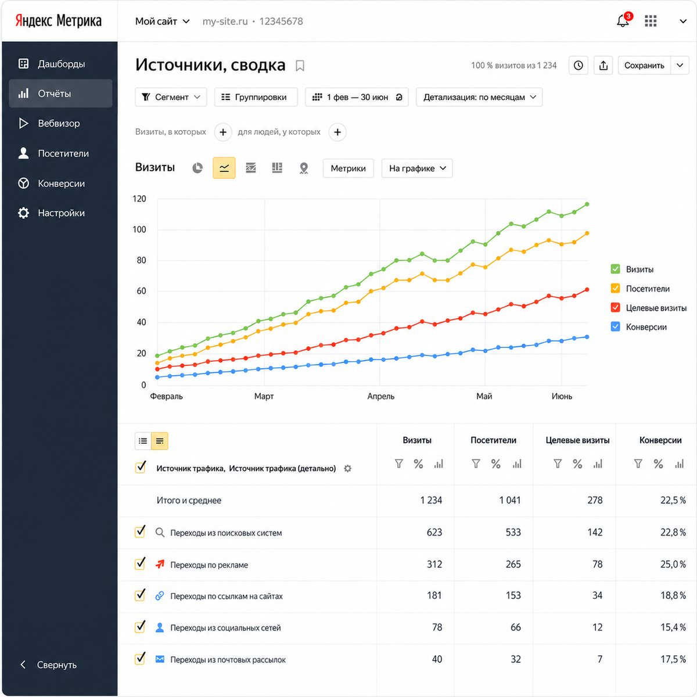

Пост 01
Наборщик
Берёт следующий кластер из плана, заново снимает частотность в Wordstat на сегодня, смотрит, что сейчас в топ-10 по этим запросам, и собирает бриф: интент, структура заголовков, что обязано быть на странице.
Запустим контент-завод за 7 дней. Первое попадание в поиск — уже через 1–2 месяца.
Срок запуска закреплён договором: не уложились по нашей вине — следующий месяц производства бесплатно.

Первая неделя уходит на разведку. Из неё выходит не презентация, а рабочие документы, по которым дальше живёт производство: ядро запросов, структура сайта и очередь публикаций. Всё остаётся у вас — на ваших аккаунтах и в вашем кабинете.
Разбираем спрос: кто и какими словами ищет, что покупают сразу, а что читают и уходят, как двигается сезон, сколько стоит тот же клик в контексте. Отделяем запросы с деньгами от красивого, но пустого трафика.
Снимаем первую десятку Яндекса по ключевым запросам и разбираем каждого: структура разделов, сколько страниц в индексе, по каким запросам они реально ранжируются, какие темы закрыты, а какие — нет. Дыры конкурентов становятся вашими первыми страницами.
Собираем всё: Wordstat, поисковые подсказки, запросы конкурентов, длинные хвосты. Чистим мусор, снимаем частотность, размечаем интент — купить, узнать, сравнить, найти рядом. Близкие запросы сводим в кластеры: один кластер — одна будущая страница.
Кластеры собираются в разделы, разделы — в дерево сайта: услуги, задачи, отрасли, города, база знаний. Дальше выстраиваем очередь: сначала то, что быстрее принесёт трафик и заявки, потом то, что работает вдолгую.
Подключаем Яндекс Вебмастер и Метрику, ставим счётчик и цели, отдаём карту сайта и robots, настраиваем отправку страниц на переобход. Аккаунты заводятся на вас, доступы остаются у вас — уйдём мы, приборы останутся.
Первые кластеры уходят в производство. С этого дня счётчик не останавливается: шесть готовых страниц в сутки, без выходных и праздников.
Ядро не лежит мёртвым файлом в отчёте. Оно превращается в структуру сайта, структура — в очередь публикаций, а очередь — в ежедневную норму завода. Ниже — как это считается на среднем проекте.
Wordstat, подсказки, хвосты и всё, по чему живут конкуренты из топ-10.
Убрали мусор, дубли, чужие бренды и запросы без спроса и смысла.
Запросы, которые поиск считает одной темой, сведены вместе.
Один кластер — одна страница. При шести в сутки это около трёх месяцев непрерывной публикации.
Ядро живое: Wordstat пересматривается постоянно, новые запросы и подсказки добавляются в план, а темы, где спрос вырос, поднимаются в очереди.
Каждая строка — будущая страница с собственным набором запросов. Разделы «Задачи» и «Города» обычно и дают основной рост: именно туда конкуренты чаще всего не доходят.
Контент-завод — это не «нейросеть пишет тексты». Это конвейер, где у каждого поста своя работа и своё право остановить страницу. Двадцать четыре агента работают посменно, без пауз на ночь и выходные; за смену завод выпускает шесть готовых к индексации страниц.
Берёт следующий кластер из плана, заново снимает частотность в Wordstat на сегодня, смотрит, что сейчас в топ-10 по этим запросам, и собирает бриф: интент, структура заголовков, что обязано быть на странице.
Пишет по брифу: конкретика, цифры, порядок работ, цены и сроки, реальные примеры. Никаких «в современном динамичном мире» — такой абзац не проходит дальше.
Проверяет каждое утверждение и каждое число: нормы, ссылки, единицы измерения, внутренние противоречия. Не сошлось — страница уходит обратно автору, а не «как-нибудь» в публикацию.
Право ветоОчеловечивает: ломает штампы и одинаковые конструкции, выравнивает ритм, добавляет то, что знает только практик. Текст должен читаться как написанный человеком, который делал это руками.
Право ветоСобирает техническую часть страницы: заголовки под кластер, мета-теги, микроразметку, перелинковку с уже вышедшими страницами, alt у картинок, адрес и хлебные крошки.
Публикует, обновляет карту сайта, отправляет страницу на переобход в Яндекс Вебмастер и ставит её на наблюдение: индексация, позиции, поведение людей.
Хороший текст без разметки — половина работы. Ниже — обязательный набор, который проставляется на каждой из шести ежедневных страниц. Не выборочно, не «когда дойдут руки», а на каждой: это часть выпуска, без неё выпускающий страницу не отпустит.
H1, дальше H2–H3 по структуре интентаcanonical на себя, чтобы дубли не растаскивали весog:title, og:description, og:image — для ссылок в мессенджерахArticle — автор, дата публикации и обновления, разделFAQPage — блок вопросов и ответов, тот самый, что разворачивается прямо в выдачеBreadcrumbList — путь до страницы вместо голого адреса в сниппетеService и Product — услуга, цена, что входит в работуOrganization — компания, логотип, контакты, профилиLocalBusiness с адресом, телефоном и часами работыgeo — координаты точки, areaServed — города и районы выездаalt — по делу, а не набор слов<script type="application/ld+json">
{
"@context": "https://schema.org",
"@graph": [
{
"@type": "Article",
"headline": "Монтаж вентиляции в кафе: нормы, расчёт и цена",
"datePublished": "2026-08-18",
"dateModified": "2026-08-18",
"author": { "@type": "Organization", "name": "АйТи-Цех" }
},
{
"@type": "FAQPage",
"mainEntity": [{
"@type": "Question",
"name": "Сколько стоит вентиляция для кафе на 60 мест?",
"acceptedAnswer": { "@type": "Answer", "text": "От 480 000 ₽ под ключ…" }
}]
},
{
"@type": "LocalBusiness",
"name": "АйТи-Цех",
"telephone": "+7 495 000-00-00",
"address": { "@type": "PostalAddress", "addressLocality": "Москва" },
"geo": { "@type": "GeoCoordinates", "latitude": 55.7558, "longitude": 37.6173 },
"areaServed": ["Москва", "Московская область"],
"openingHours": "Mo-Fr 09:00-19:00"
},
{
"@type": "BreadcrumbList", // путь вместо голого адреса в сниппете
"itemListElement": [ … ]
}
]
}
</script>
Завод не только пишет. Он всё время сверяется с реальностью: перепроверяет частотность в Wordstat, забирает данные из Вебмастера, смотрит, какие страницы вошли в индекс и как двигаются позиции, и сам решает, что поднять в очереди, а что отправить на доработку. Вот как выглядит одни сутки.
монтаж вентиляции ценаприбавил +38% за месяц — кластер поднят в очереди на 12 позиций.
Расчёт воздухообмена: формулы и таблицынаписана и передана судье фактов.
промывка теплообменникастраница поднялась с 14 на 9 место — вошла в топ-10.
вентиляция для кафеминус 6 позиций — страница поставлена на доработку и переписывание блока цен.
Ни одно из этих действий не требует вашего участия. Вы видите результат утром — и в любой момент можете открыть кабинет и посмотреть, что происходит прямо сейчас.
Никаких «работы ведутся». В кабинете видно поимённо: какие страницы вышли вчера, какие уже в индексе, по каким запросам вы попали в топ-10, как растёт трафик из поиска и что стоит в очереди на завтра. Те же цифры приходят утренним письмом.
Один проект, восемь месяцев производства. Данные на макете демонстрационные.
Разберём вашу нишу, снимем топ-10 конкурентов и покажем ядро со структурой сайта. После этого будет видно, сколько страниц у вас впереди и за какой срок завод их закроет.
Срок запуска закреплён договором: не уложились по нашей вине — следующий месяц производства бесплатно.